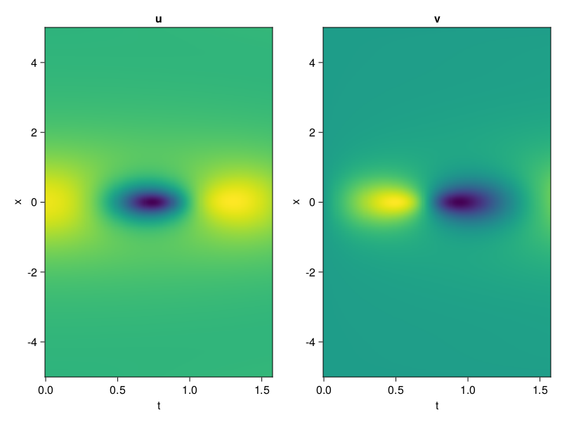
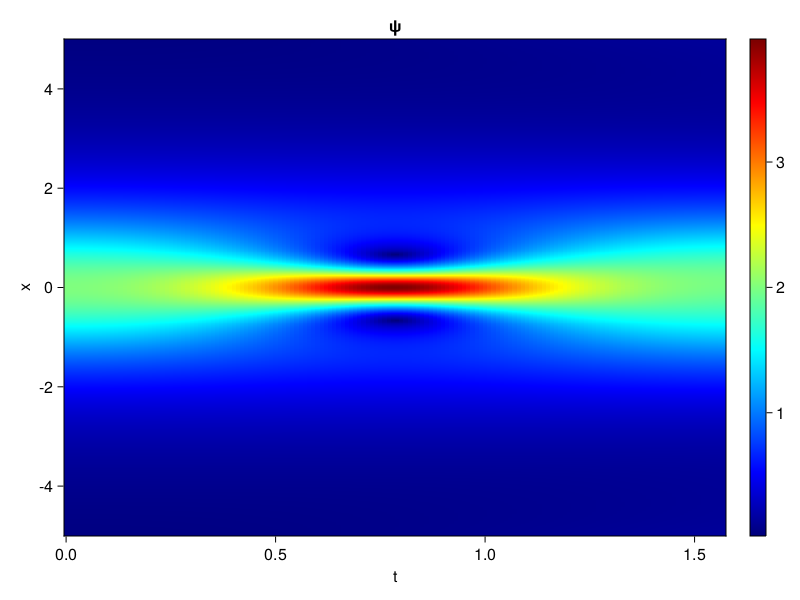
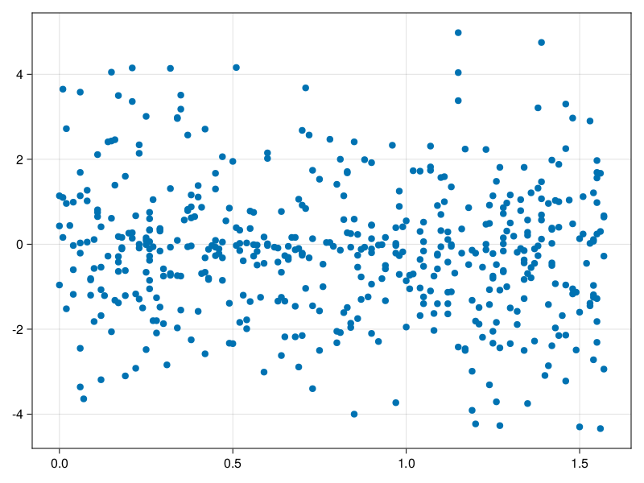

Schrödinger equation
The nonlinear Shrödinger equation is given by
\[\mathrm{i} \partial_t \psi=-\frac{1}{2} \sigma \partial_{x x} \psi-\beta|\psi|^2 \psi\]
Let $\sigma=\beta=1, \psi=u+v i$, the equation can be transformed into a system of partial differential equations
using ModelingToolkit, IntervalSets, Sophon, CairoMakie
using Optimization, OptimizationOptimJL
@parameters x,t
@variables u(..), v(..)
Dₜ = Differential(t)
Dₓ² = Differential(x)^2
eqs=[Dₜ(u(x,t)) ~ -Dₓ²(v(x,t))/2 - (abs2(v(x,t)) + abs2(u(x,t))) * v(x,t),
Dₜ(v(x,t)) ~ Dₓ²(u(x,t))/2 + (abs2(v(x,t)) + abs2(u(x,t))) * u(x,t)]
bcs = [u(x, 0.0) ~ 2sech(x),
v(x, 0.0) ~ 0.0,
u(-5.0, t) ~ u(5.0, t),
v(-5.0, t) ~ v(5.0, t)]
domains = [x ∈ Interval(-5.0, 5.0),
t ∈ Interval(0.0, π/2)]
@named pde_system = PDESystem(eqs, bcs, domains, [x,t], [u(x,t),v(x,t)])\[ \begin{align} \frac{\mathrm{d}}{\mathrm{d}t} u\left( x, t \right) =& - \frac{1}{2} \frac{\mathrm{d}}{\mathrm{d}x} \frac{\mathrm{d}}{\mathrm{d}x} v\left( x, t \right) - \left( \left|u\left( x, t \right)\right|^{2} + \left|v\left( x, t \right)\right|^{2} \right) v\left( x, t \right) \\ \frac{\mathrm{d}}{\mathrm{d}t} v\left( x, t \right) =& \frac{1}{2} \frac{\mathrm{d}}{\mathrm{d}x} \frac{\mathrm{d}}{\mathrm{d}x} u\left( x, t \right) + \left( \left|u\left( x, t \right)\right|^{2} + \left|v\left( x, t \right)\right|^{2} \right) u\left( x, t \right) \end{align} \]
pinn = PINN(u = Siren(2,1; hidden_dims=16,num_layers=4, omega = 1.0),
v = Siren(2,1; hidden_dims=16,num_layers=4, omega = 1.0))
sampler = QuasiRandomSampler(500, (200,200,20,20))
strategy = NonAdaptiveTraining(1,(10,10,1,1))
prob = Sophon.discretize(pde_system, pinn, sampler, strategy)OptimizationProblem. In-place: true
u0: ComponentVector{Float64}(u = (layer_1 = (weight = [0.02329951524734497 0.39758145809173584; 0.15802890062332153 0.31482064723968506; … ; -0.08365964889526367 -0.2336685061454773; -0.33959317207336426 0.1589760184288025], bias = [0.0; 0.0; … ; 0.0; 0.0;;]), layer_2 = (weight = [-0.3637275993824005 -0.328580766916275 … 0.001037993817590177 -0.279522567987442; 0.38687968254089355 0.4595147371292114 … 0.07621921598911285 -0.12701937556266785; … ; 0.5950767397880554 -0.5521854162216187 … -0.5487759113311768 -0.6008804440498352; -0.5477468967437744 -0.5372194051742554 … -0.02174333855509758 -0.5366057753562927], bias = [0.0; 0.0; … ; 0.0; 0.0;;]), layer_3 = (weight = [0.25162696838378906 -0.3992496132850647 … 0.015431498177349567 -0.25024935603141785; 0.2409396916627884 -0.0009751403704285622 … 0.524076521396637 0.11472777277231216; … ; 0.5545162558555603 -0.15789397060871124 … 0.42098698019981384 -0.3197406232357025; -0.5057235360145569 -0.3041343092918396 … 0.5722726583480835 -0.007282308768481016], bias = [0.0; 0.0; … ; 0.0; 0.0;;]), layer_4 = (weight = [-0.40507638454437256 0.1741441786289215 … 0.04485558345913887 0.02591918408870697; 0.08758371323347092 -0.2608417272567749 … -0.4079010486602783 0.5819178223609924; … ; 0.3711237609386444 0.5282788276672363 … -0.36142048239707947 0.08256325125694275; -0.33357664942741394 -0.15365199744701385 … 0.32656019926071167 -0.15172836184501648], bias = [0.0; 0.0; … ; 0.0; 0.0;;]), layer_5 = (weight = [-0.4069589078426361 -0.13518023490905762 … 0.4813793897628784 0.49806395173072815], bias = [0.0;;])), v = (layer_1 = (weight = [0.285844624042511 0.007692575454711914; 0.3090301752090454 -0.07996487617492676; … ; 0.403835654258728 -0.4509669542312622; 0.0743369460105896 0.09477609395980835], bias = [0.0; 0.0; … ; 0.0; 0.0;;]), layer_2 = (weight = [-0.45024585723876953 0.5161986947059631 … -0.07424484193325043 0.6070664525032043; -0.20288927853107452 0.4943621754646301 … -0.20209145545959473 -0.36351266503334045; … ; 0.23187477886676788 0.3002467453479767 … 0.4223170280456543 0.3044414818286896; -0.522564172744751 0.22234448790550232 … 0.562301754951477 0.6073688864707947], bias = [0.0; 0.0; … ; 0.0; 0.0;;]), layer_3 = (weight = [0.5090442895889282 -0.04594402015209198 … -0.38614851236343384 -0.04456000402569771; -0.005175295751541853 -0.013971196487545967 … -0.6107836961746216 -0.08802426606416702; … ; -0.48680049180984497 0.493321031332016 … -0.511085569858551 0.2936747074127197; 0.2239702194929123 0.044208213686943054 … -0.332051157951355 -0.15945005416870117], bias = [0.0; 0.0; … ; 0.0; 0.0;;]), layer_4 = (weight = [0.4679354131221771 -0.04159676656126976 … -0.46185359358787537 -0.24437333643436432; -0.5718386173248291 0.4387988746166229 … -0.4068669378757477 0.08994826674461365; … ; -0.27332985401153564 0.5154106616973877 … 0.5259717106819153 -0.31461769342422485; -0.19988296926021576 -0.13698072731494904 … -0.4444980025291443 0.5406643152236938], bias = [0.0; 0.0; … ; 0.0; 0.0;;]), layer_5 = (weight = [0.31839925050735474 -0.18551567196846008 … 0.5322591662406921 -0.07139191031455994], bias = [0.0;;])))Now we train the neural nets and resample data while training.
function train(pde_system, prob, sampler, strategy, resample_period = 500, n=10)
bfgs = BFGS()
res = Optimization.solve(prob, bfgs; maxiters=2000)
for i in 1:n
data = Sophon.sample(pde_system, sampler)
prob = remake(prob; u0=res.u, p=data)
res = Optimization.solve(prob, bfgs; maxiters=resample_period)
end
return res
end
res = train(pde_system, prob, sampler, strategy)u: ComponentVector{Float64}(u = (layer_1 = (weight = [0.19622134223277443 0.48038070589611015; 0.38407548086191917 0.7793840545226675; … ; -0.3975186636934779 -0.018081118162365392; -0.3513213243980035 0.8275256726987595], bias = [0.05243304792205029; -0.8496000056269721; … ; -0.08287092304795715; -0.7510351786577527;;]), layer_2 = (weight = [-0.38936880302040966 -0.8524715562946474 … -0.08897369458680585 -0.9724447007528005; 0.3430595438438894 0.5637304396081614 … -0.04910580725410492 -0.148742449662113; … ; 0.27988322098680957 -0.6341303069402676 … -0.6801367734744695 -0.6463485437442198; -0.6784530154371035 -0.20301774748165094 … -0.19943662998458345 -0.7131162725761967], bias = [0.02017581999268809; -0.45041888078385245; … ; -0.0721414340831; -0.18299497588170185;;]), layer_3 = (weight = [0.5742746741583062 -0.534386819014024 … 0.07390105130969406 -0.27311436660829885; 0.05624174305040944 0.05247233666098987 … 0.4608856594011108 0.46348351121801756; … ; 0.813084830293013 -0.24723244899692115 … 0.13182408120101105 -0.5483133653894255; -0.0070223625852610175 -0.2909063215542561 … 0.4841654499795052 -0.11921021279625679], bias = [0.1297913351117895; 0.052098935243184534; … ; -0.2187900359591993; 0.13529683675549486;;]), layer_4 = (weight = [0.026029541027362182 0.2338101043454391 … -0.31531858315442246 -0.2386730157892185; 0.002068953300578998 -0.315753908439631 … -0.404148145189693 0.7137379921255917; … ; 0.21759007489781249 0.549413498497272 … -0.19830232480230486 0.029664365706479495; -0.4017783887079505 -0.1601140279598578 … 0.21202998458337885 -0.02466045069636519], bias = [-0.17187610843615866; 0.026453299473312663; … ; 0.29367663352513507; 0.06271061950718539;;]), layer_5 = (weight = [-0.29613132307754114 -0.31679382879802614 … 0.17689451758207955 0.8623213728666497], bias = [-0.25128527014241925;;])), v = (layer_1 = (weight = [0.6142883971360764 -1.2337522911983385; 0.7295056380021353 0.08876154003692091; … ; 0.5790082607789737 -0.5236060287024821; 0.005903294434071474 0.1378928734052401], bias = [0.2833022400323791; 0.3444677318558868; … ; 0.14747958266285432; -0.107283585220005;;]), layer_2 = (weight = [-0.16201498144774953 0.534668874563445 … -0.11486927523860543 0.6635052976843091; -0.2790414163806891 0.32921157451020766 … -0.2790861819618319 -0.3570580737732225; … ; 0.6347656694053373 0.455202303505367 … 0.6951515761340136 0.261308231637709; -0.34075998729824236 -0.00035995757517210444 … 0.3763428292891905 0.6280381562128996], bias = [0.09663736212585086; -0.01618415598453265; … ; 0.08783514683121567; 0.1656751062934065;;]), layer_3 = (weight = [0.4392641603005439 0.12552298816554097 … -0.05209135461325085 0.13626342697630356; -0.026871278435410838 0.0633638136725081 … -0.21381839982088205 0.05243113212887544; … ; -0.6235740239666313 0.6433185064742536 … -0.30695215314149144 0.14351758855009158; 0.14075574592484183 0.12634087784766945 … -0.35219535621526094 -0.20575120029261657], bias = [0.03217611130742918; -0.24994240859400152; … ; -0.48875245631053194; 0.08820102789603133;;]), layer_4 = (weight = [0.407379608464531 0.3969799461495641 … 0.26908696414762107 -0.5120887586957337; -0.4793707942112011 0.38055332904825506 … -0.629540192471098 0.14788439383784996; … ; -0.2335844606146588 0.7108319979328304 … -0.07526421494028897 0.02674551112534444; -0.19151895512372918 -0.34049540899524827 … -0.8368242945301689 0.5947253311488727], bias = [-0.18478115269039389; 0.19760121473236655; … ; -0.03443912068716057; -0.06047845913562565;;]), layer_5 = (weight = [0.5788900227460962 0.007907532230949131 … 0.1899443585639986 -0.5999964986657846], bias = [0.03490233321805908;;])))phi = pinn.phi
ps = res.u
xs, ts= [infimum(d.domain):0.01:supremum(d.domain) for d in pde_system.domain]
u = [sum(phi.u(([x,t]), ps.u)) for x in xs, t in ts]
v = [sum(phi.v(([x,t]), ps.v)) for x in xs, t in ts]
ψ = @. sqrt(u^2+ v^2)
axis = (xlabel="t", ylabel="x", title="u")
fig, ax1, hm1 = heatmap(ts, xs, u', axis=axis)
ax2, hm2= heatmap(fig[1, end+1], ts, xs, v', axis= merge(axis, (; title="v")))
display(fig)
axis = (xlabel="t", ylabel="x", title="ψ")
fig, ax1, hm1 = heatmap(ts, xs, ψ', axis=axis, colormap=:jet)
Colorbar(fig[:, end+1], hm1)
display(fig)
Customize Sampling
Bascially any sampling method is supportted. For example we can sample data according to the predicted solution.
using StatsBase
data = vec([[x, t] for x in xs, t in ts])
wv = vec(ψ)
new_data = wsample(data, wv, 500)
new_data = reduce(hcat, new_data)
fig, ax = scatter(new_data[2,:], new_data[1,:])
prob.p[1] = new_data
prob.p[2] = new_data
prob = remake(prob; u0 = res.u)
# res = Optimization.solve(prob, bfgs; maxiters=1000)OptimizationProblem. In-place: true
u0: ComponentVector{Float64}(u = (layer_1 = (weight = [0.19622134223277443 0.48038070589611015; 0.38407548086191917 0.7793840545226675; … ; -0.3975186636934779 -0.018081118162365392; -0.3513213243980035 0.8275256726987595], bias = [0.05243304792205029; -0.8496000056269721; … ; -0.08287092304795715; -0.7510351786577527;;]), layer_2 = (weight = [-0.38936880302040966 -0.8524715562946474 … -0.08897369458680585 -0.9724447007528005; 0.3430595438438894 0.5637304396081614 … -0.04910580725410492 -0.148742449662113; … ; 0.27988322098680957 -0.6341303069402676 … -0.6801367734744695 -0.6463485437442198; -0.6784530154371035 -0.20301774748165094 … -0.19943662998458345 -0.7131162725761967], bias = [0.02017581999268809; -0.45041888078385245; … ; -0.0721414340831; -0.18299497588170185;;]), layer_3 = (weight = [0.5742746741583062 -0.534386819014024 … 0.07390105130969406 -0.27311436660829885; 0.05624174305040944 0.05247233666098987 … 0.4608856594011108 0.46348351121801756; … ; 0.813084830293013 -0.24723244899692115 … 0.13182408120101105 -0.5483133653894255; -0.0070223625852610175 -0.2909063215542561 … 0.4841654499795052 -0.11921021279625679], bias = [0.1297913351117895; 0.052098935243184534; … ; -0.2187900359591993; 0.13529683675549486;;]), layer_4 = (weight = [0.026029541027362182 0.2338101043454391 … -0.31531858315442246 -0.2386730157892185; 0.002068953300578998 -0.315753908439631 … -0.404148145189693 0.7137379921255917; … ; 0.21759007489781249 0.549413498497272 … -0.19830232480230486 0.029664365706479495; -0.4017783887079505 -0.1601140279598578 … 0.21202998458337885 -0.02466045069636519], bias = [-0.17187610843615866; 0.026453299473312663; … ; 0.29367663352513507; 0.06271061950718539;;]), layer_5 = (weight = [-0.29613132307754114 -0.31679382879802614 … 0.17689451758207955 0.8623213728666497], bias = [-0.25128527014241925;;])), v = (layer_1 = (weight = [0.6142883971360764 -1.2337522911983385; 0.7295056380021353 0.08876154003692091; … ; 0.5790082607789737 -0.5236060287024821; 0.005903294434071474 0.1378928734052401], bias = [0.2833022400323791; 0.3444677318558868; … ; 0.14747958266285432; -0.107283585220005;;]), layer_2 = (weight = [-0.16201498144774953 0.534668874563445 … -0.11486927523860543 0.6635052976843091; -0.2790414163806891 0.32921157451020766 … -0.2790861819618319 -0.3570580737732225; … ; 0.6347656694053373 0.455202303505367 … 0.6951515761340136 0.261308231637709; -0.34075998729824236 -0.00035995757517210444 … 0.3763428292891905 0.6280381562128996], bias = [0.09663736212585086; -0.01618415598453265; … ; 0.08783514683121567; 0.1656751062934065;;]), layer_3 = (weight = [0.4392641603005439 0.12552298816554097 … -0.05209135461325085 0.13626342697630356; -0.026871278435410838 0.0633638136725081 … -0.21381839982088205 0.05243113212887544; … ; -0.6235740239666313 0.6433185064742536 … -0.30695215314149144 0.14351758855009158; 0.14075574592484183 0.12634087784766945 … -0.35219535621526094 -0.20575120029261657], bias = [0.03217611130742918; -0.24994240859400152; … ; -0.48875245631053194; 0.08820102789603133;;]), layer_4 = (weight = [0.407379608464531 0.3969799461495641 … 0.26908696414762107 -0.5120887586957337; -0.4793707942112011 0.38055332904825506 … -0.629540192471098 0.14788439383784996; … ; -0.2335844606146588 0.7108319979328304 … -0.07526421494028897 0.02674551112534444; -0.19151895512372918 -0.34049540899524827 … -0.8368242945301689 0.5947253311488727], bias = [-0.18478115269039389; 0.19760121473236655; … ; -0.03443912068716057; -0.06047845913562565;;]), layer_5 = (weight = [0.5788900227460962 0.007907532230949131 … 0.1899443585639986 -0.5999964986657846], bias = [0.03490233321805908;;])))